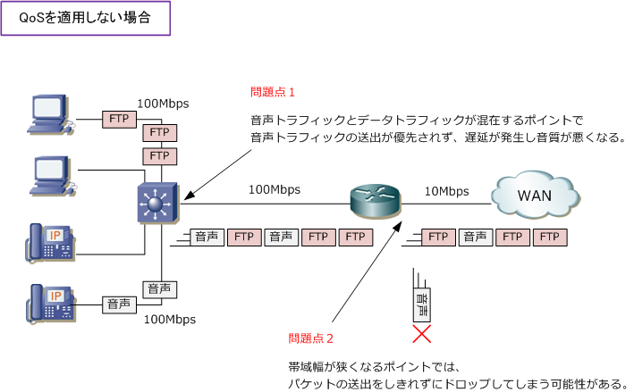
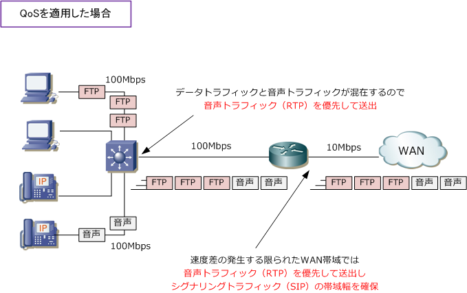
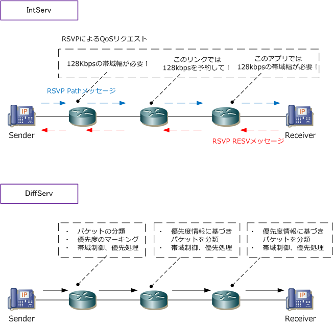

QoS ( Quality of Service )
QoSとは
QoS（Quality of Service）とはネットワーク上で提供するサービス品質のこと。ネットワーク機器に QoSを実装することで、ある特定の通信を優先して伝送させたり、帯域幅を確保することができます。
先ず、下図でQoSを実装していない状態を見てみましょう。QoSを実装していない場合、ネットワーク 構成により、音声トラフィックに遅延や、音声トラフィックのパケットにドロップが発生する可能性が あることが分かります。一般的に速度のミスマッチするポイントでこのような品質の問題が発生します。

FTPトラフィックと音声トラフィックの特性は以下の通りであり、FTPトラフィックと音声トラフィックが 発生するようなネットワークでは、音声のサービス品質確保のために、QoSを実装すべきことが分かります。 ※ FTPトラフィックに関係なく、PCとIP電話が混在するネットワークでは、音声トラフィックを優先するためのQoSの適用は必須。
| トラフィックの種類 | その特性 |
|---|---|
| FTPトラフィック | ・ トラフィック転送に多くの帯域幅を必要とする。 ・ バースト性がある。（トラフィック転送の短時間の集中。一時的な帯域の占有） ・ TCPの再送制御もあり、音声トラフィックのようなリアルタイム性は求められない。 |
| 音声トラフィック | ・ 使用する帯域幅は一定である。 ・ 必要となる帯域幅は少ない。(1通話あたり、G.729なら40Kbps、G.711なら100Kbps） ・ UDPによるトラフィック転送が行われ、遅延に敏感でリアルタイム性が求められる。 |
次にQoSを適用したトラフィックの状態を見てみましょう。FTPトラフィックと音声トラフィックが混在する ポイントでも、QoSの適用により音声トラフィックが優先して送出されます。帯域幅の狭くなるWAN帯域の ポイントでも、QoSの適用により音声トラフィック（ RTP ）を優先して送出して、シグナリグトラフィック （SIP）は帯域幅を確保させます。これらのQoSの実装で、音声のサービス品質は確保されることになります。

なお、音声トラフィックにはQoS要件のガイドラインがあり、次の値以下に抑えることが推奨されていますが これらの値はかなり以前に策定されたものあり、メーカごとに異なることからこの値は参考値としましょう。 ⇒ 音声トラフィック（ 遅延：150ミリ秒以下、ジッター：30ミリ秒以下、損失：1%以下 ）
QoSのモデル
ネットワークにQoSを適用する場合のモデルにはIntServ、DiffServ、ベストエフォートの3つがあります。
| QoSのモデル | 説明 |
|---|---|
| IntServ (Integrated Services） |
アプリケーションの通信フローごとに帯域を予約する方式。RSVPというプロトコルを使用する。 アプリの通信フローは膨大であることから、それを各ネットワーク機器で保持する必要があり 機器の負荷が高くなるので大規模ネットワークでは適していない。一般的に使用されていない。 |
| DiffServ (Differentiated Services) |
トラフィックを分類、マーキング(優先度付け)、キューイング(トラフィックのキューへの振り分け) スケジューリング（キューの優先度に応じたパケットの送出）して、ネットワーク機器ごとに実施。 広く採用されているQoS方式であり、一般的にQoSといえばDiffServモデルのことを指します。 |
| ベストエフォート | DiffServ や IntServ のアーキテクチャによるQoSが実装されていなかった場合、パケットの内容や サイズに関係なく、先着順にパケットを送出していくベストエフォート型 (= FIFO) が提供される。 つまり、何も設定がなければQoSのデフォルトの動作として、全トラフィックはFIFOで処理される。 |
QoSのモデルにおける「IntServ」と「DiffServ」の違いは下図の通りです。
